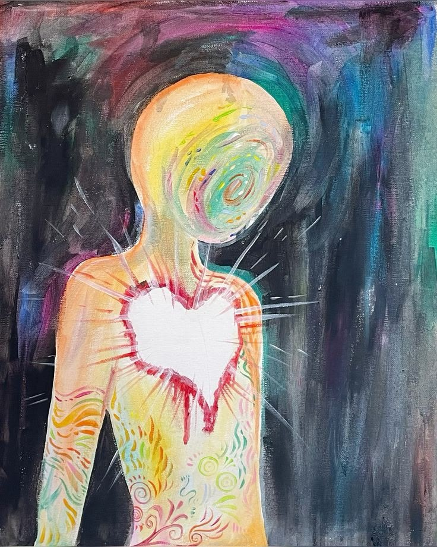

Seu Perfil Emocional Predominante
"Você aprendeu a não precisar de ninguém"
Esse resultado costuma surpreender, porque, de fora, você provavelmente parece a pessoa mais forte e mais resolvida do grupo. Só que força e proteção nem sempre são a mesma coisa. Muitas vezes, o que parece força é, na verdade, um jeito de nunca mais se colocar numa posição em que possa ser decepcionado de novo.
Esse padrão costuma nascer de experiências em que depender de alguém não funcionou. Pode ter sido negligência, uma perda importante ou decepções repetidas com pessoas que deveriam estar presentes e não estavam. Diante disso, uma criança (ou um adulto ainda em formação) aprende uma estratégia de sobrevivência muito eficiente: se eu resolver tudo sozinho, ninguém pode me decepcionar de novo. Com o tempo, essa estratégia virou identidade.
Hoje, isso aparece assim: você tem dificuldade real de pedir ajuda, mesmo quando está sobrecarregado. Prefere fazer tudo sozinho a delegar, mesmo quando delegar seria mais fácil. Mantém uma certa distância emocional, mesmo em relações que te importam. E, por baixo dessa autossuficiência toda, às vezes existe um medo silencioso de ficar isolado, que você raramente admite, nem pra si mesmo.
Um mal-entendido comum: confundir hiperindependência com autonomia saudável. Não são a mesma coisa. Autonomia saudável se aproxima dos outros porque quer, sem medo. Hiperindependência se afasta dos outros porque, em algum nível, ainda espera ser decepcionada. Uma nasce de segurança, a outra nasce de proteção.
O caminho aqui não é deixar de ser capaz ou deixar de se virar sozinho. É, aos poucos, permitir que outras pessoas também façam parte, praticando pedir ajuda em situações pequenas antes de precisar fazer isso nas grandes. Interdependência não é fraqueza. É reconhecer que ninguém precisa carregar tudo sozinho o tempo inteiro.
"Se eu depender de alguém, vou me decepcionar."
Dra. Aline Zanette
Médica · Saúde Mental · CRM 36587
Ferramenta de autoconhecimento. Não é diagnóstico médico ou psicológico e não substitui avaliação individual realizada por profissional habilitado.